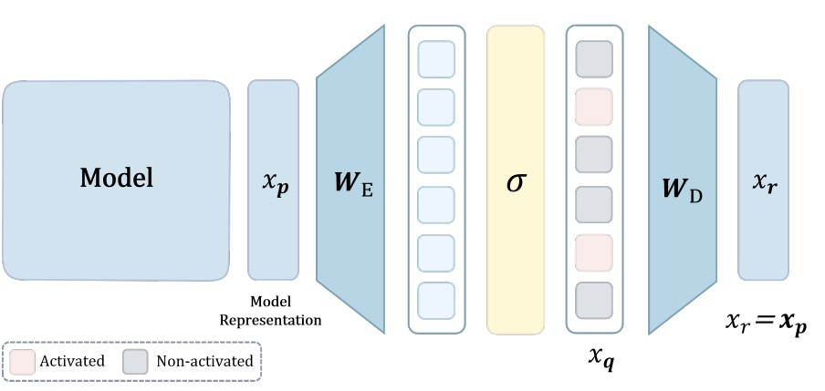
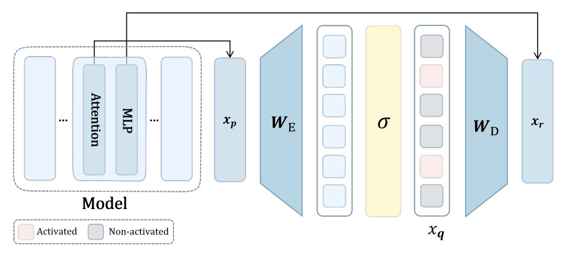
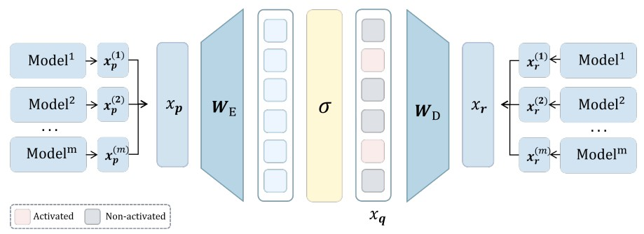
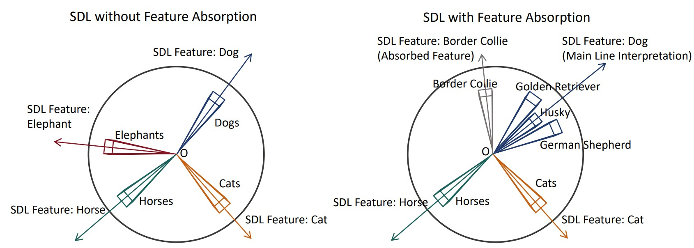
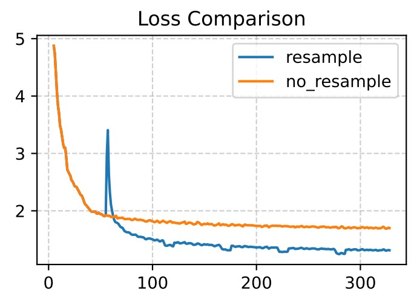

Paper Walkthroughs
A Unified Theory of Sparse Dictionary Learning in Mechanistic Interpretability: Piecewise Biconvexity and Spurious Minima
We provide the first unified theory of Sparse Dictionary Learning in mechanistic interpretability.
Background and Motivation
A central insight from mechanistic interpretability is that neural networks encode meaningful concepts as linear directions in superposition. Individual neurons respond to multiple unrelated concepts—a phenomenon known as polysemanticity. To disentangle these superposed representations, Sparse Dictionary Learning (SDL) methods have emerged as the dominant paradigm.
Despite remarkable empirical success, SDL methods consistently exhibit persistent failure modes that practitioners encounter daily: learned features remain polysemantic, dead neurons fail to activate on any data samples, and feature absorption occurs where one neuron captures a specific sub-concept while another responds to the remaining related concepts. Techniques like neuron resampling and auxiliary losses have been proposed to address these issues, yet these fixes remain ad-hoc engineering solutions without principled justification.
This paper argues that the root cause of these failure modes is the non-identifiability of SDL methods: even under the idealized Linear Representation Hypothesis, SDL optimization admits multiple solutions achieving perfect reconstruction loss, some recovering no interpretable ground-truth features at all. The paper develops the first unified theoretical framework that explains why, and introduces a principled fix.
A Unified Framework for SDL
The Linear Representation Hypothesis
The theoretical foundation rests on formalizing what it means for a model to encode concepts linearly. A model representation \(x_p \in \mathbb{R}^{n_p}\) satisfies the Linear Representation Hypothesis if there exists a feature function \(x: \mathcal{X} \to \mathbb{R}^n\) and a feature matrix \(W_p \in \mathbb{R}^{n_p \times n}\) such that for all \(s \sim \mathcal{D}\):
where \(x(s) \in \mathbb{R}^n_+\) is non-negative, sparse (each component is zero with probability \(\geq S\)), and each component corresponds to a human-interpretable concept. Under extreme sparsity (\(S \to 1\)), feature co-activation is rare—at most one feature tends to be active at a time—which is the key condition enabling tractable analysis.
The General SDL Optimization Problem
All SDL methods share a common two-layer architecture. An SDL model maps an input representation \(x_p(s) \in \mathbb{R}^{n_p}\) to a target representation \(x_r(s) \in \mathbb{R}^{n_r}\) through:
where \(W_E \in \mathbb{R}^{n_q \times n_p}\) is the encoder, \(W_D \in \mathbb{R}^{n_r \times n_q}\) is the decoder, \(x_q(s) \in \mathbb{R}^{n_q}\) is the sparse latent, and \(\sigma\) is a sparsity-inducing activation. The objective minimizes mean square error:
This single formulation captures SAEs, transcoders, crosscoders, and all their variants through different choices of the \((x_p, x_r)\) pair and activation function \(\sigma\). A key unifying property all practical activations share is:
This holds for ReLU, JumpReLU, Top-\(k\), and Batch Top-\(k\)—all major sparsity mechanisms in practice.
Instantiations: SAEs, Transcoders, and Crosscoders
Sparse Autoencoders (SAEs) are characterized by setting \(x_r = x_p\) (self-reconstruction). The encoder projects to a higher-dimensional sparse latent space, encouraging \(x_q(s)\) to capture the underlying ground-truth features.

Figure 1. Sparse Autoencoder: encoder \(W_E\) maps \(x_p\) to sparse latents \(x_q\), decoder \(W_D\) reconstructs \(x_r = x_p\) from \(x_q\).
Transcoders capture interpretable features in layer-to-layer transformations, approximating the input-output function of a target MLP component. In the framework, transcoders set \(x_p = x_{\text{mid}}(s)\) (MLP inputs) and \(x_r = x_{\text{pre}}(s)\) (MLP output prediction).

Figure 2. Transcoder: encoder \(W_E\) maps \(x_p(s)\) to sparse latents \(x_q(s)\), decoder \(W_D\) gives \(x_r(s)\) as a prediction of the MLP's output.
Crosscoders discover shared features across multiple representation sources by jointly encoding and reconstructing concatenated representations. They set \(x_p = [x_p^{(1)}; \ldots; x_p^{(m)}]\) and \(x_r = [x_r^{(1)}; \ldots; x_r^{(m)}]\).

Figure 3. Crosscoder: encoder \(W_E\) maps concatenated multi-layer input \(x_p\) to \(x_q\), decoder \(W_D\) reconstructs multi-layer output \(x_r\).
Theoretical Results
1. Loss Approximation Under Extreme Sparsity
The first key result enables tractable analysis by showing that under extreme sparsity, the SDL loss decomposes into independent per-feature reconstruction terms.
Theorem 3.1 (Loss Approximation). Under the Linear Representation Hypothesis and Representation Assumptions, define the approximate loss as:
$$\tilde{\mathcal{L}}_{\text{SDL}}(W_D, W_E) := \sum_{d=1}^n M_d \left\| w_r^d - W_D \sigma(W_E w_p^d) \right\|^2$$
where \(M_d = \Pr(\mathbf{x}(s) = x_d(s)e_d) \cdot \mathbb{E}[x_d(s)^2 | x_d(s) > 0]\). Then \(|\mathcal{L}_{\text{SDL}} - \tilde{\mathcal{L}}_{\text{SDL}}| \leq O((1-S)^2)\).
This is powerful: under extreme sparsity, the reconstruction quality for each ground-truth feature direction \(w_p^d\) becomes essentially independent of all other features. The entire multi-feature problem decouples into \(n\) separate single-feature problems, each asking: can the SDL model route feature \(d\) through its bottleneck and recover the corresponding output direction \(w_r^d\)?
2. SDL Optimization is Piecewise Biconvex
The SDL loss is globally non-convex due to activation discontinuities. However, within any fixed activation pattern region—a region where the set of neurons activated by each feature remains constant—it exhibits a clean convex structure.
Theorem 3.2 (Bi-convex Structure of SDL). Define the activation pattern region \(\Omega_A = \{W_E : \forall d \in [n], A(d) = \{i \in [n_q] : \langle w_E^i, w_p^d \rangle > c\}\}\). Then \(\tilde{\mathcal{L}}_{\text{SDL}}\) exhibits bi-convex structure over \(\mathbb{R}^{n_r \times n_q} \times \Omega_A\):
1. For any fixed \(W_E \in \Omega_A\), \(W_D \mapsto \tilde{\mathcal{L}}_{\text{SDL}}(W_D, W_E)\) is convex in \(W_D\).
2. For any fixed \(W_D\), \(W_E \mapsto \tilde{\mathcal{L}}_{\text{SDL}}(W_D, W_E)\) is convex in \(W_E\) over \(\Omega_A\).
This establishes SDL as a biconvex optimization problem, bridging mechanistic interpretability with classical biconvex optimization theory. The intuition is clean: fix \(W_E\), and the activated neurons for each feature become fixed linear functions, making the decoder update a standard least-squares problem. Fix \(W_D\), and the encoder update similarly becomes a quadratic minimization over each row. The trouble is that alternating between these convex subproblems can still converge to spurious partial optima.
3. Global Minimum: Feature Recovery Works—But Is Not Unique
The paper characterizes exactly what the global minimum looks like. There is a constructive configuration that achieves near-zero loss by perfectly recovering ground-truth features:
This configuration makes the encoder compute the inner product of each input with the feature directions, and the decoder maps each activated latent back to the corresponding output direction. Its loss is \(\tilde{\mathcal{L}}_{\text{SDL}}(W_D^*, W_E^*) = O((1-S)M^2)\) where \(M\) is the maximum interference between features—vanishing as interference decreases.
However, Theorem 3.4 reveals the fundamental problem: the necessary and sufficient condition for zero loss is simply
This system of \(n\) vector equations is underdetermined when \(n_q > n\). There exist infinitely many encoder-decoder configurations achieving zero reconstruction loss that bear no correspondence whatsoever to the ground-truth features. The SDL optimization problem simply cannot distinguish between them using reconstruction loss alone.
4. Spurious Partial Minima Are Pervasive
Beyond the global minimum, the biconvex structure implies a landscape littered with spurious partial minima—points where both \(\nabla_{W_D} \tilde{\mathcal{L}} = 0\) and \(\nabla_{W_E} \tilde{\mathcal{L}} = 0\) simultaneously, yet the loss is strictly positive and features are polysemantic.
Theorem 3.7 (Prevalence of Spurious Partial Minima). Under the Linear Representation Hypothesis with \(n \geq 2\) and \(n_q \geq n\), for any realizable activation pattern \(\mathcal{P} = (F_1, \ldots, F_{n_q})\) that is polysemantic (some neuron \(i\) has \(|F_i| \geq 2\)) and forms a partition of \([n]\), there exists a partial minimum \((W_D^*, W_E^*)\) of \(\tilde{\mathcal{L}}_{\text{SDL}}\) exhibiting this pattern with positive loss.
Every realizable polysemantic activation pattern—where some neuron responds to multiple features—corresponds to a partial optimum where gradient descent can become permanently trapped. The proof is constructive: given any such pattern, one constructs the encoder to realize it, and then finds the optimal decoder for that encoder via least squares. Both gradients vanish at this point, but the loss is positive because the decoder must average over features that are assigned to the same neuron, making perfect reconstruction impossible.
5. Feature Absorption Has a Theoretical Explanation
Feature absorption—where one SDL neuron captures a specific sub-concept (e.g., "Border Collie") while another responds to all remaining siblings (e.g., all other dog breeds collectively)—is one of the most commonly reported and least understood failure modes in the SDL literature.

Figure 5. Feature absorption emerges from hierarchical concept structure. Left: Ideal SDL recovers separate monosemantic features for Dog, Cat, Horse, Elephant. Right: Feature absorption occurs when one neuron absorbs "Border Collie" while another responds to the remaining dog breeds.
The paper provides the first principled explanation. Define a hierarchical concept structure where a parent concept \(p\) is active if and only if at least one of its sub-concepts \(c_1, \ldots, c_k\) is active: \(p(x) > 0 \iff \exists i, c_i(x) > 0\).
Theorem 3.10 (Feature Absorption from Hierarchical Structure). Suppose there exist \(M\) parent concepts, each decomposing into \(k_i \geq 2\) sub-concepts. If the original activation pattern \(\mathcal{P}\) is realizable, then for any parent \(i^*\) and any sub-concept \(j^*\) of that parent, there exists a realizable activation pattern \(\mathcal{P}'\) exhibiting feature absorption:
$$\mathcal{P}' = (F_1, \ldots, F_{i^*} \setminus \{d_{i^*,j^*}\}, \{d_{i^*,j^*}\}, \ldots, F_M)$$
The proof is geometric: one can always scale down the parent neuron's encoder weight until the minimum-activation sub-concept falls below the activation threshold, then construct a dedicated new neuron pointing directly at that separated sub-concept. The result is a realizable polysemantic pattern—and by Theorem 3.7, a spurious partial minimum. Feature absorption is not a training bug; it is a structural property of hierarchical representations meeting the biconvex optimization landscape.
The Linear Representation Bench
To expose these pathologies under fully controlled conditions, the paper introduces the Linear Representation Bench—a synthetic benchmark that precisely instantiates the Linear Representation Hypothesis with fully accessible ground-truth features.
Data is generated by constructing a feature matrix \(W_p^{\text{true}} \in \mathbb{R}^{n_p \times n}\) with unit-norm columns and bounded pairwise interference (via projected gradient descent), then generating sparse feature activations \(x(s)\) from shifted exponential distributions with sparsity \(S\). The observed representations are \(x_p(s) = W_p^{\text{true}} x(s)\). Ground-truth feature directions are fully known, enabling direct measurement of GT Recovery (fraction of ground-truth features correctly identified) and Maximum Inner Product (mean best-match alignment).
A striking finding from this benchmark: SDL methods can achieve near-zero reconstruction loss \(\tilde{\mathcal{L}}_{\text{SDL}} \approx 0\) while recovering none of the ground-truth features. The learned encoder directions rotate away from the true feature directions, and the decoder compensates accordingly. This is not convergence to a bad local minimum—it is convergence to a different global minimum, one that is reconstruction-optimal but interpretability-catastrophic.
Feature Anchoring: A Principled Fix
Our theoretical analysis reveals that the underdetermined nature of the SDL loss landscape is the fundamental obstacle. The solution is to add external constraints that break the degeneracy. We propose feature anchoring: constraining a subset of encoder rows and decoder columns to align with known semantic directions.
Given \(k\) anchor features \(\{\tilde{w}_p^{(i)}, \tilde{w}_r^{(i)}\}_{i=1}^k\), the anchored SDL objective is:
where the anchoring loss penalizes deviation of the first \(k\) encoder rows and decoder columns from the anchor directions:
Feature anchoring is method-agnostic: it applies equally to SAEs, transcoders, crosscoders, and all their variants (TopK SAEs, Matryoshka SAEs, etc.) since it only constrains the encoder \(W_E\) and decoder \(W_D\) matrices that are common to all SDL architectures.
Two approaches for obtaining anchors are presented. When ground-truth features are available (Linear Representation Bench), a random subset of true feature directions is used directly. For real-world datasets, semantic subpopulations are identified and their mean representations are computed and normalized:
Experimental Results
Feature Recovery on the Linear Representation Bench
On the Linear Representation Bench with \(n = 1000\) features, \(n_p = n_r = 768\), \(n_q = 16000\), and \(S = 0.99\), feature anchoring consistently improves GT Recovery and Maximum Inner Product across all SDL methods. Notable highlights: BatchTopK SAE improves from 84.80% to 89.38% GT Recovery; Crosscoder improves from 56.42% to 57.71%; and even ReLU SAE, which achieves 0% GT Recovery without anchoring, shows improved Maximum Inner Product (0.205 → 0.246) and meaningfully reduced L0-norm. Methods that were already achieving ~85% GT Recovery see additional gains of 2–5 percentage points.
Feature Recovery on CLIP Embeddings of ImageNet
On real-world CLIP embeddings of ImageNet-1K, the gains are even more dramatic. Without feature anchoring, TopK SAE, BatchTopK SAE, and Matryoshka SAE all achieve 0.00% GT Recovery—none of the 1000 ImageNet classes are recovered. With feature anchoring (using 30 class-mean anchors), all three methods jump to ~24% GT Recovery, with Maximum Inner Product improving from ~0.51–0.68 to ~0.85–0.86. This validates that the underdetermined nature of SDL optimization is not merely a synthetic phenomenon but a genuine obstacle in real-world representation learning.
Neuron Resampling Helps Escape Partial Minima
Theorem 3.7 connects dead neurons (neurons with empty activation sets \(F_i = \emptyset\)) to spurious partial minima. Dead neurons occur when the optimization gets trapped at a polysemantic partial minimum where some neurons take on all the work while others receive no gradient signal. Resampling reinitializes dead neurons toward under-reconstructed directions, perturbing the optimization away from these traps.

Figure 6. Feature resampling accelerates convergence and improves final loss. Training SAEs on Llama 3.1 8B (layer 12), resampling after 5,000 steps enables escape from spurious local minima, achieving substantially lower final loss than standard training.
This experiment trains SAEs on Llama 3.1 8B Instruct (layer 12, dimension 4096) with latent dimension 131,072 for 30,000 steps on FineWeb-Edu. The resampled version achieves noticeably lower final loss, providing empirical validation that the spurious partial minima characterized theoretically are indeed the bottleneck being escaped.
More theoretical results, proofs, and comprehensive ablation studies across superposition ratios, interference levels, sparsity regimes, and activation functions are in the full paper. Check it out at arxiv.org/abs/2512.05534!